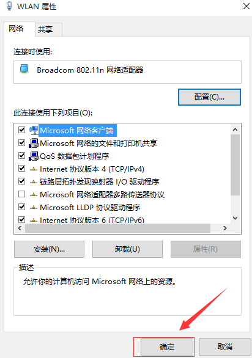

Windows 10/8/7
1 右键网络进入属性或者右键右下角的Inernet进入网络共享中心，如下图:
2 点击网络和共享中心左侧的"更改适配器设置"链接，如下图:
3 选中正在联网的网络连接，鼠标右键菜单里选择"属性"进入
4 在网络连接属性窗口中选中"Internet 协议版本 6 (TCP/IPv6)"，然后点击"属性"，或者双击进入
5 选择使用指定的DNS，在DNS服务器地址中输入240c::6666，输入完成点击确定
6 再次点击确定完成设置
MacOS系统 DNS配置步骤如下
1 选取苹果菜单 >"系统偏好设置"，然后点按"网络"。
2 从列表中选择想要使用的网络连接服务（例如 AirPort 或以太网，除非您指定其他服务），然后点按"高级"。
3 点按"DNS"，然后点按"DNS 服务器"列表底部的添加 (+)。输入 DNS 服务器的IPv6 地址(240c::6666)。
4 完成后，点按"好"。
什么是DoT?
DNS over TLS（简称DoT）是一项域名解析安全扩展协议，它使用TLS协议加密传输用户和递归解析服务器之间的DNS消息，起到防止中间用户窃听和域名查询隐私泄漏的作用。已列入标准文档（参见 RFC 7858 和 RFC 8310）。
如何使用DoT?
访问我们在853端口的TLS服务： dns.ipv4dns.com
目前安卓9.0以上版本提供了"私人DNS"设置以支持DNS-over-TLS：
1 打开 "设置" 应用，点击 "网络和互联网"
2 点击 "网络和互联网" 界面中的 "高级"
3 在展开的菜单中选择 "私人 DNS"
4 输入dns.ipv4dns.com，点击保存
华为手机从 2019 年开始可以直接配置"加密DNS"，同样实现DoT：
1 打开 "设置" 应用，点击 "更多连接"
2 点击 "加密DNS"
3 勾选"指定加密DNS服务"，输入dns.ipv4dns.com

什么是DoH?
DNS over HTTPS（简称DoH）与DoT类似，同样也是一种域名解析安全扩展协议，它允许通过 HTTPS 协议加密 DNS 递归解析过程，以防止中间用户窃听和域名查询隐私泄漏。已列入标准文档（参见 RFC 8484）。
如何使用DoH?
访问我们在443端口的HTTPS服务： https://dns.ipv4dns.com/dns-query
目前Firefox (火狐浏览器) 下载 已支持"启用基于 HTTPS的 DNS"设置：
1 打开火狐浏览器，点击右上角菜单，在下拉菜单中点击"选项"

2 找到"网络设置"部分，点击设置
3 勾选"启用基于HTTPS的DNS"，在选用提供商中选择"自定义"，并输入： https://dns.ipv4dns.com/dns-query
4 点击确定完成
数据隐私保护介绍
公共递归在向根服务器，顶级域服务器，二级域服务器发起查询时，会对查询域名进行信息隐藏，从而阻止域名查询信息泄露。
标准文档： RFC7816 DNS Query Name Minimisation to Improve Privacy